An introduction to Google Earth Engine
This week we were introduced to Google Earth Engine.
Google Earth Engine?
Google Earth Engine: Trying to organize World’s information and making it accessible.
Data Catalog + scalable compute (Google data centers and Flexible APIs) = global scale analysis + Visualization developers.google.com
What is Google Earth Engine?
- Platform used for scientific analysis
- Vizualisation of Geospatial datasets
Used by?
- User Background: academic, non-profit, business and government users
what does Google Earth Engine do?
- Hosts satellite imagery
- A place where data mining can be conducted
- Stores it in a archive (as public data)
- Ingests images in a daily basis
- Makes data available in a global scale
- Provides tools for data analysis (large data sets)
- Tools for analysis
- APIs etc
- analyse what?
- Forest and water coverage
- Land use change
- Assess the health of agri field
How is it different from Google earth?
- It can analyse
- Data on Google earth is only partly available on GEE
what does it include?
- Historical earth images- 40 years span
GEE compared to the Landsat and Sentinel data in Google Cloud?
- Collaboration
- Landsat -> present on Google Cloud Storage
- Sentinel-2 -> present on Google Cloud Storage
- GEE Code Editor and API
- Direct access :Earth Engine data catalog
- Indirect access: Landsat and Sentinel-2
- Easier to access
- Note: Google Earth Engine Code Editor and API - USE Earth Engine data catalog
- Prior- longer pre-processing time.
- why Google satellite feature in good maps don’t have clouds? `
- Imagine u took picture of one place or location every day, some days cloudy (clouds move too), other not. You stack them up,choose the pixel and go through it vertically and choose the best pixel. Best pixel=median pixel (one that is not too bright nor too dark)= cloud free image.
Limitations? Application of Google Earth Engine
- runs calculations as scripts -> not convenient forn complex analysis/ process
- Visualization capability of GEE
- limited modelling
- lacks complex datasets ( SAR and high-resolution geospatial data sets).
- lacks ability to perform optimization
Application: I’m curious on how GEE works, so we shall try to work on the basics in the following segment.
Learning from : Google Earth Engine 101
- Script - Where u can open codes or write codes
- Get link - to generate link, share it, the person u shared it with can open it and help u troubleshoot it
- Java script involves a lot of declaring variables, so learn how to declare “var” for gee on script box
- end with (;)
- /* or // instead of # to remove code/ comment out
- when you stretch images, keep it in smaller value to not make it appear graded out.
- Eg: Map.addLayer(srtm, {min: 0, max: 3000}, ‘srtm’);
- black and white data set
- 0s and 1s
- Layers widget (lower right) = toggel layers on and off.
- toggle loss> off = to view elevation data
- toggle loss> on = Black and white data= white (since this layer is for forest data)= there was some forest cover lost at those pixels
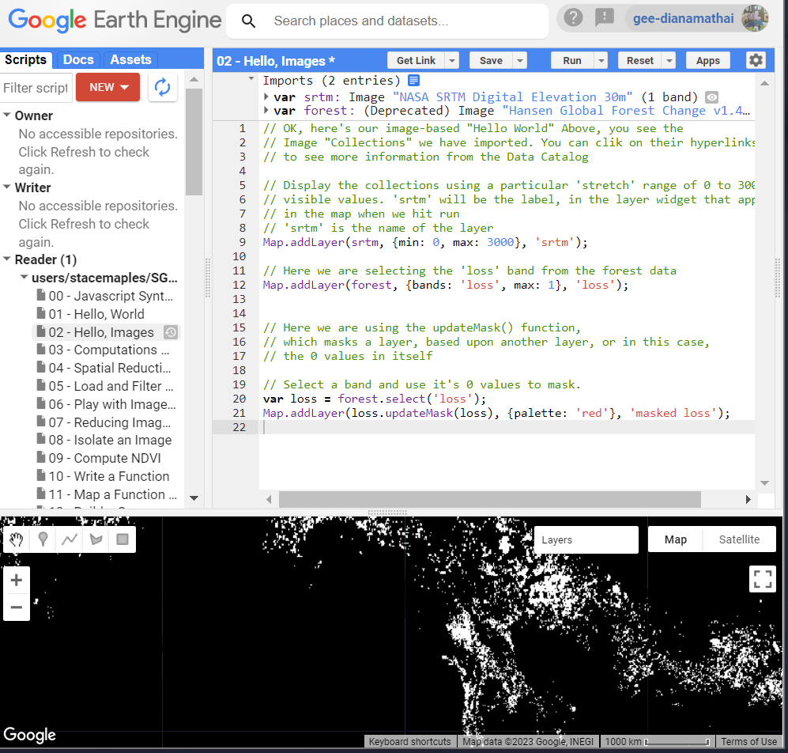
- Making layers transparent so that u can see through it
- Why? because in your stacked data layer, you would wanna look a other layers in the context of your layer on top.
- Masking:
- Takes a binary image (1s and 0s)
- Whereever there is 0 it turns the target image INVISIBLE
- So in the code above we are adding a layer loss but updating it with an update mask based on itself updateMask(loss)
- Result: the 0s in the data set= black pixels= INVISIBLE
- remove - loss (from the widget)
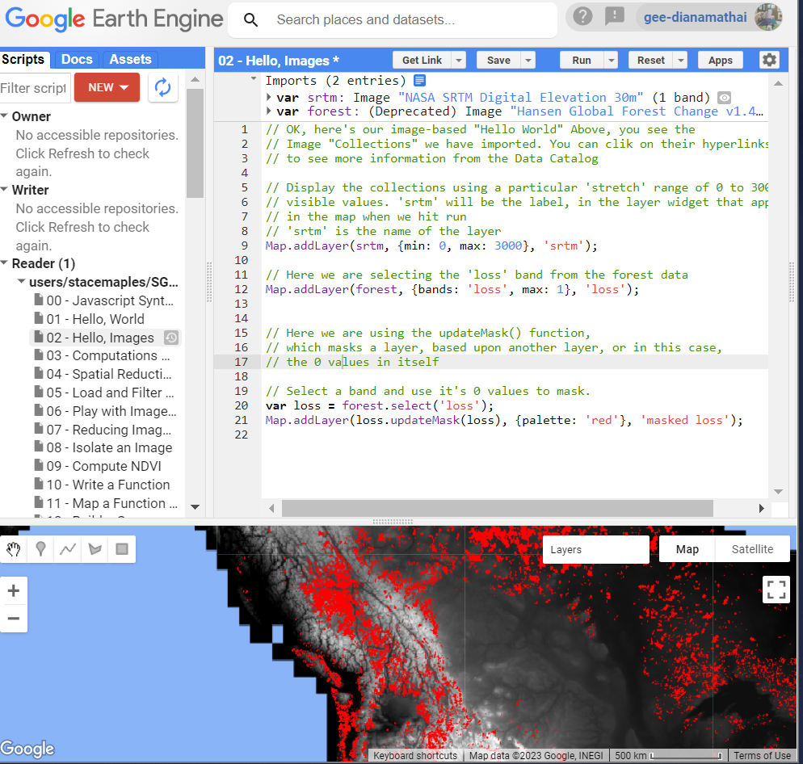
Computations with images
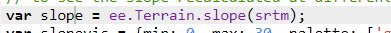
- In the above image we use slope function on our srtm data = slope data set displayed on GE
- Note (best practice is to create a variable to create a visualization)
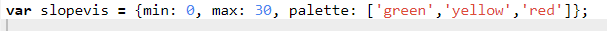
Spatial Reduction
- Spatial reduction= zonal stats (GIS).
- whats does it do?
- Takes an area of an image and you characterize the pixel value in some way. How??
- summing
- Avg
- Result: reduce an image to some variable that describes it in someway.
- focus on the layer scale
Load and filter an image
- Stretching:
- we know RGB value is btw 0-255 (remember the 8 bit)
- reflectance value: can be negative or can have very varied range
- what happens in stretch?
- we take the actual range of values- layers widget> settings>custom> stretch 100%
- what does it do?
- it looks at the lowest value and the highest value
- lowest and highest value= normalize (0-255)
- output= image
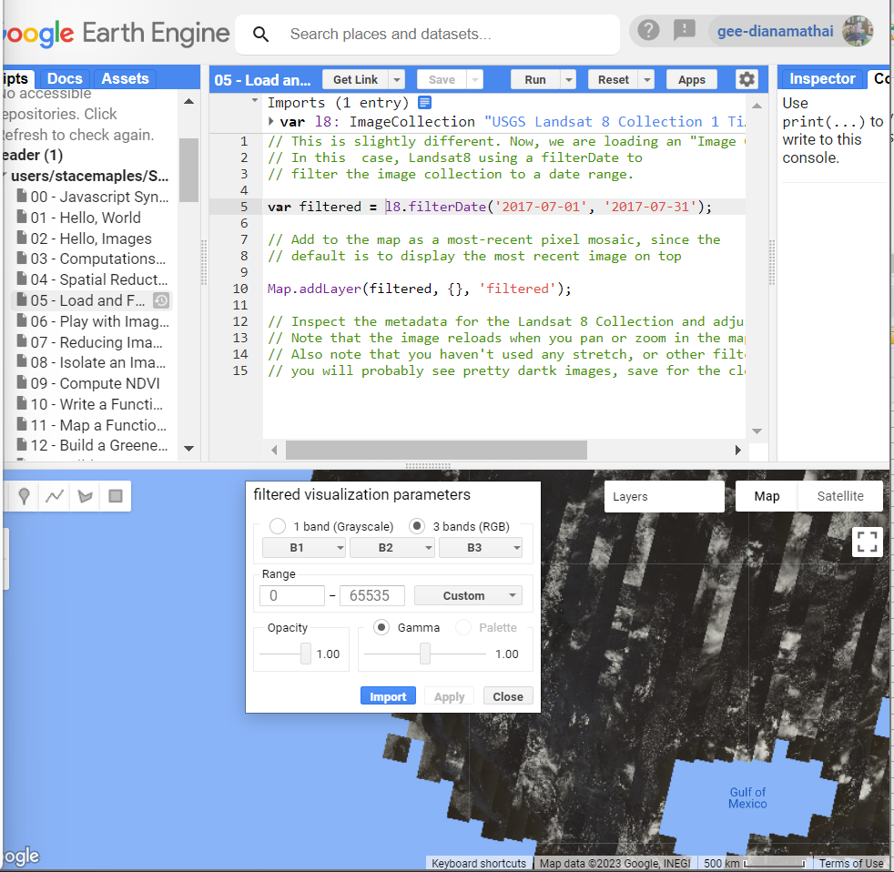
Play with image bands
- create new vizualization var and select bands
- for true color vizualization we use red (B4 band), green (B3) and blue bands (B2)
- B5’(Near infrared), ‘B4’, ‘B3’= False color infrared
Reducing image collection
- ee.Algorithms.Landsat.simpleComposite gives a good outout image removing all the clouds.
Compute NDVI
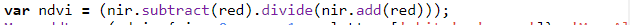
- always remember you have to tell in code which is ur infrared band and red band.
- why?- as band numbers differ
- darker green= healthy vegetation
Chart NDVI over time
- looking at cycle of change
Export Imagery
- look under “task”
- exporting data format- geotiff
- run the code and you would get the image in ur google drive RGB, PNG and Geo tiff
Sentinel Dam Inundation
- get median for the desired bands> add the layers to the map= median composite
- we are trying to Classify
- our data sets: has many bands
- but we can visualize only 3 bands
- But i can use the information from all the bands for my image classification
- remember the spectral curve?
- trying to discriminate the target base on the diversions of those spectral curves
Google Earth Engine Catalogue
- Data sets available
- can be searched through Tags
- T21 the brightness temp
- every data set- sample script to guide
Reference Material
- arcg.is: Introduction to Complete Beginners
- earthengine: Sample script book
- youtube: Video with pratical
- Earth Engine data Catalog: search for data sets here
- developers.google: GEE Guide
Google Earth Engine Practical
In this segment we shall work on the designed practical and register few important steps, challenges and the respective solution.
Point = ee.Geometry.Point ; latlong
To convert into Import record > place the cursor on the code, there will be no pop-up message
Loading data from Landsat.
- search > landsat > Landsat 9 OLI-2/TIRS-2 > Surface Reflectance > USGS Landsat 9 Level 2, Collection 2, Tier 1
Downloading shp file from gadm
- download file from https://gadm.org/download_country.html > data> country> India> shapefile> download- dont unzip
Loading gadm layers in GEE
Issue1:
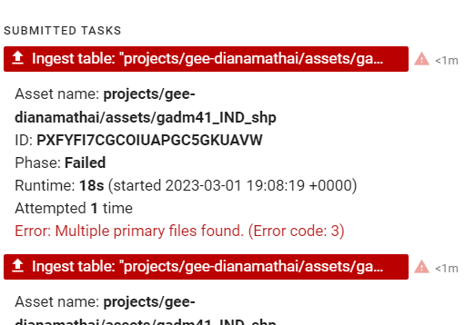
Solution:
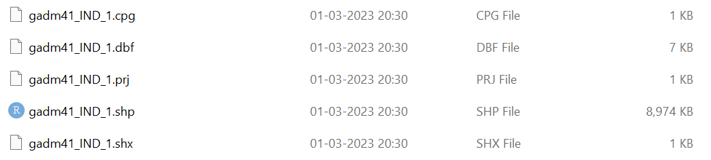
- Do not load multiple layers on GEE, just extract the required layers and load them (.shp, .dbf, and .shx files)
- How? Load the layers> click>view assets> features> select the required file
Identifying the specific spatial point from the gadm layers to insert the specific code in the script
Issue 2: Could not find Delhi layer to filter so chose chhattisgarh
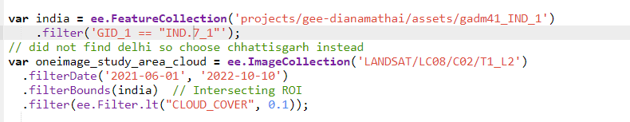
Solution: Open the file from gadm in QGIS, and get the code for Delhi from the attribute table
Click on the “map” to inspect
Function .toUint16() as.glcmTexture won’t work with 32 bit data.
PCA (read Andy’s notes for details)
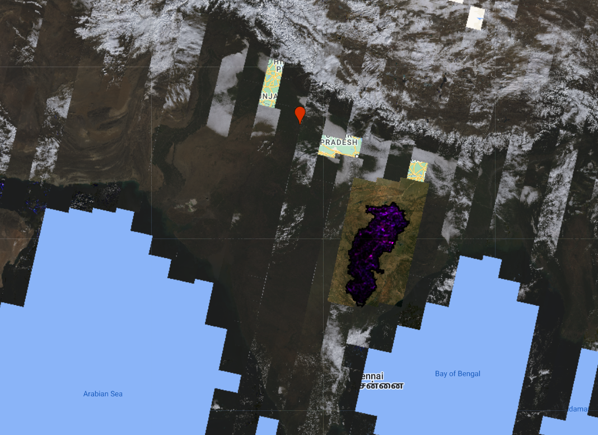
Check max and minimum pixel to avoid the below error - (Too many pixels in the region ….)
Issue 3:
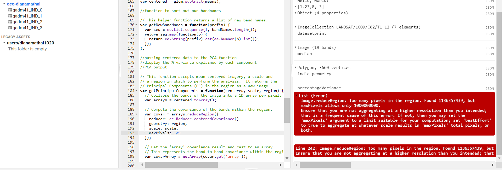
Solution: increase the limit maxPixels = 20e9v
Band
- Issue 4:
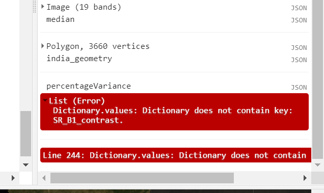
- Solution: change clip to glcm
Application
Paper: Fadli et al. (2019)
- Issue: deforestation > green house emission
- Location: Indonesia
- Forest cover: 91 million hectares (3rd largest in the world)
- Tree-cover loss average: 1.38 Mn Ha/ year
- Rate of forest loss: 0.31 Mn Ha/ year (2000- 2005)
- Why GEE was used?
- Cloud based
- easy to process- huge geospatial datasets
- uses high-performance computing resources
- For?
- to analyse forest cover status and changes- to check GEE’s effectiveness to monitor large area
- Observation duration: 2000-2016
- Dataset
- global forest change by Hansen
- Multi-year Landsat imageries -> to identify forest cover (2000)
- Multi temporal Satellite images-> forest cover loss year
- resolution: 30m
- forest cover gain pixels
- Analysis:
- temporal variation ->forest cover loss (2001-2016)- time series
- Steps:
GEE- forest cover - 2000
select: Indonesia
calculate forest cover fraction
forest loss areas
discuss estimated values-> forest cover changes
Extract specific forest cover region- loss and gain
Result:
- Total forest cover area: 338,000 km2 (2000)
- More than 5m high tree= defined as vegetation
- Trees are expressed as ‘2000 Percent Tree Cover’ percentage per output plot cell
- Forest cover loss= change from forest -> non forest
- Forest cover gain= change from non-forest -> forest
- The Year of Forest Loss is the total separation of ‘Forest Loss’ with an annual time scale
- Median of a series of observations of the quality of the planting season that passed in the assessment
- Tree cover (2000)= % of tree cover ( 0-100-pixel range)
- Monitoring satellite-based land cover changes= by landsat data- from Hansen Forest search- in the code editor > selected (red, green and blue images)
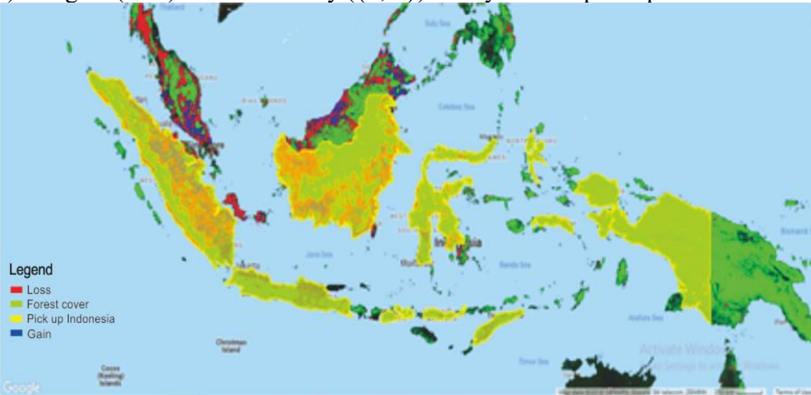
Custom visualization of Hansen (2000-2017) forest change data 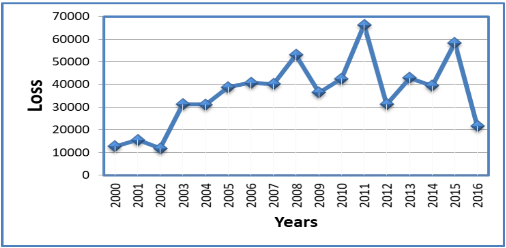
Changes in forest loss areas in each year from 2000 to 2016 on Indonesia - green= tree cover in 2000 (in %) - higher value than red, blue
- red= loss
- blue= gain
- Highest loss= 2011 (reason- development) and 2015
- Satellite monitoring benefits- land changes ( by human intervention)
Reflection
GEE
- Helps analyse high spatial resolution data
- Free and easy to access
- Consolidated environment, large catalogue of data
- Can be useful to analyse or monitor changes at a large scale
- Web based interactive environment
- Strong cloud computing power